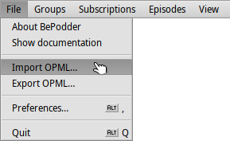
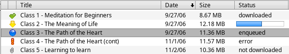

User Interface
User InterfaceBePodder
for Haiku
User Interface ‒ Using BePodder ‒ Preferences
Download ‒ Bugreports & Feedback ‒ Thanks
Podcasting is a method for publishing audio and video broadcasts via the Internet; links to free audio and video files are enclosed in RSS and Atom feeds.
Therefore Podcasting is simply a type of online media delivery; users can subscribe to a podcast using a feed (such as RSS 'Really Simple Syndication' or Atom).
An aggregator (or podcatcher) like BePodder, is a piece of software that allows you to subscribe to a RSS feed and periodically check for and download new content; with BePodder you can check for new Podcast items (Episodes) of your subscribed Channels. Any item can contain an enclosure, just like an Email can contain an attachment.
User InterfaceBePodder has an easy to use yet powerful User Interface. The main window is split into tree panels:
At the very top of the BePodder main window is the menu bar with five menus available: File, Groups, Subscriptions, Episodes, and View. Some menu commands are followed by a right pointing arrow that indicates a submenu of related commands. As you explore each menu, be sure to take a look at the submenus as well. Click on a menus to show its commands:
| Add Button: opens the Add Window to add a feed url (e.g. http://www.newpodcast.com/rss.xml) usually given on the podcast homepage; looks for a text or graphic link that says something like 'XML', 'RSS' or 'Podcast Feed' on it. | |
| Channel Remove Button: opens a window in which you can select how to remove the channel: just archive the selected channel (keeping all the files and enclosures downloaded so far) or delete the whole channel from your computer. | |
| Check Button: checks the selected channel and updates the list of the available items for that podcast adding the new items. | |
| Web Button: shows the channel homepage in the browser. To select your favorite browser open BePodder's Preferences, click in the menu bar and in the Preferences Window under 'File Type' select your favorite browser. | |
| Play Button: with this button you can view or listen to the file enclosure of the selected episode. To select your favorite player open BePodder's Preferences, click in the menu bar and in the Preferences Window under 'File Type' select you favorite player. | |
| Download Button: downloads the file enclosure of the selected episode; you can see the download info by clicking on the third tab over the info panel. | |
| Stop Button: stops to download the file enclosure of the selected episode; to resume the download double-click the episode or select the episode and click the Download Button. | |
| Remove Button: deletes the selected episode (you will loose the enclosure file). |
Using BePodderGetting started with BePodder is easy.
On the left of the main window you can see the 'Subscription List' with all your feed subscriptions. You can add your subscriptions in two ways:
Click the Add Button, then insert the feed url (example: http://freemeditate.org/learnToMeditate.xml) and click
Import your feeds from another application with the command
|  |
If you select a Podcast in the subscriptions list and use the check button, BePodder adds the new items to the 'Episodes list'; you can check all your podcasts by right-clicking and selecting 'Check all channels' in the context menu.
Select an item in the 'Episodes list' and then double-click on it (or click the Download Button) to start downloading the enclosed file; you can always stop the download by clicking on the Stop Button.
In the second column of the 'Episode list' there are icons that indicate the state of the item:
|  |
When you click on the Subscribed Podcasts in the 'Subscriptions List' the software shows you, in the 'List of episodes', all the items available in that Subscription. Select an item and then click play (Play Button) to view or listen to the file.
You can access the Enclosures Folder by clicking on the folder icon in the Info Pannel or by right-clicking your mouse on an item and select 'Open Enclosures Folder' in the context menu.
Preferences can be accessed by clicking in the menu bar . You can select a category from the left list of the preferences dialog: FileType, Channels, Download and Proxy.
DownloadBePodder is directly available through HaikuDepot from the HaikuPorts repository. You can also build it yourself using Haikuporter. The source is hosted at GitHub.
Bugreports & FeedbackPlease use BePodder's issue tracker at GitHub if you experience unusual difficulties.
If you'd like to contribute translations, please do so by logging into the Polyglot site with your GitHub account.
ThanksBePodder was originally coded for the BeOS by Funky Idea Software and was released under a MIT license in 2014.
Thanks to everyone contributing code, translations and feedback.